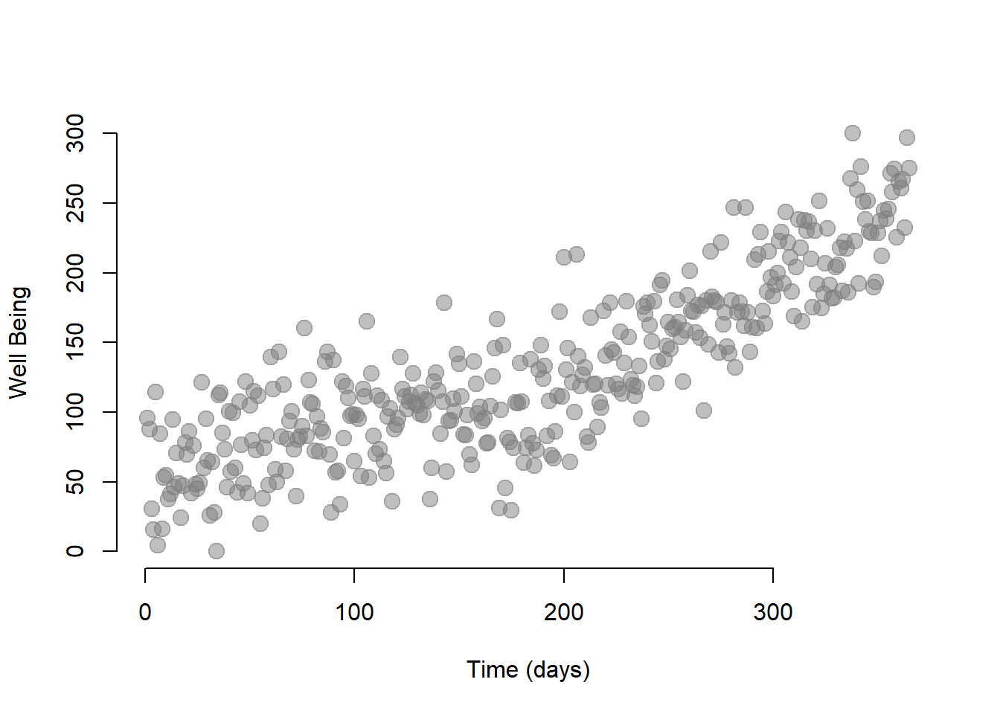
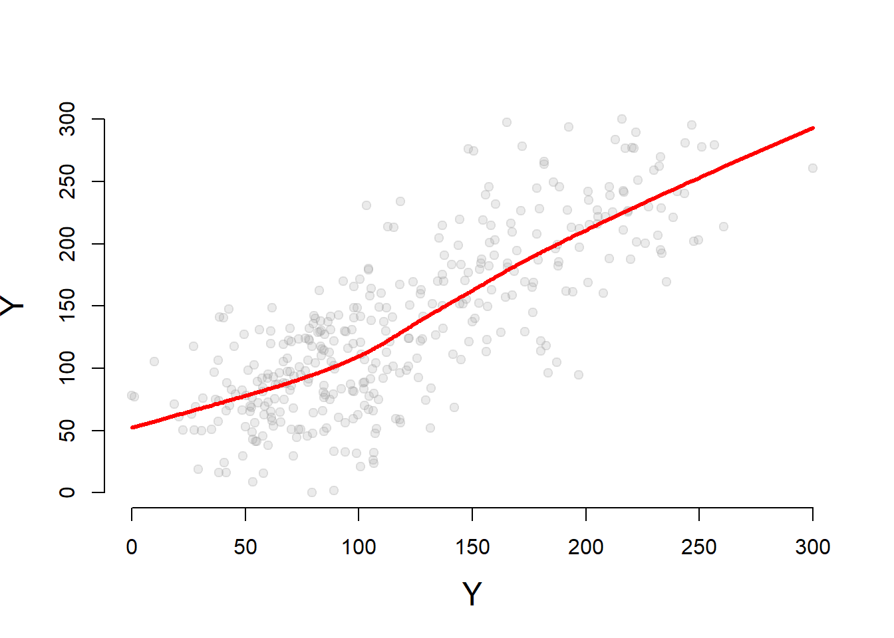
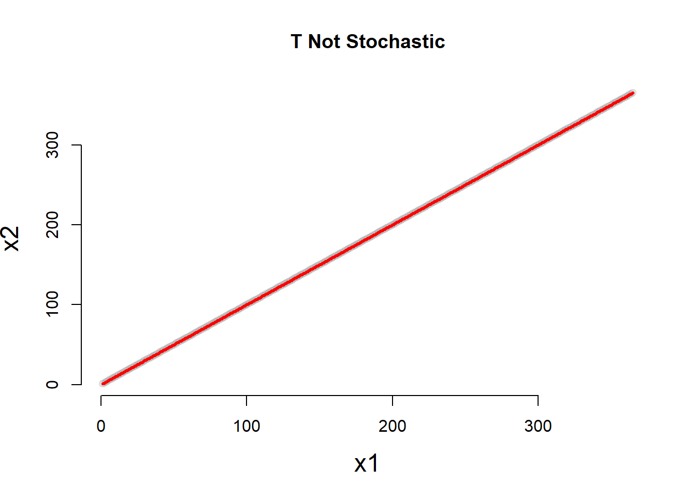
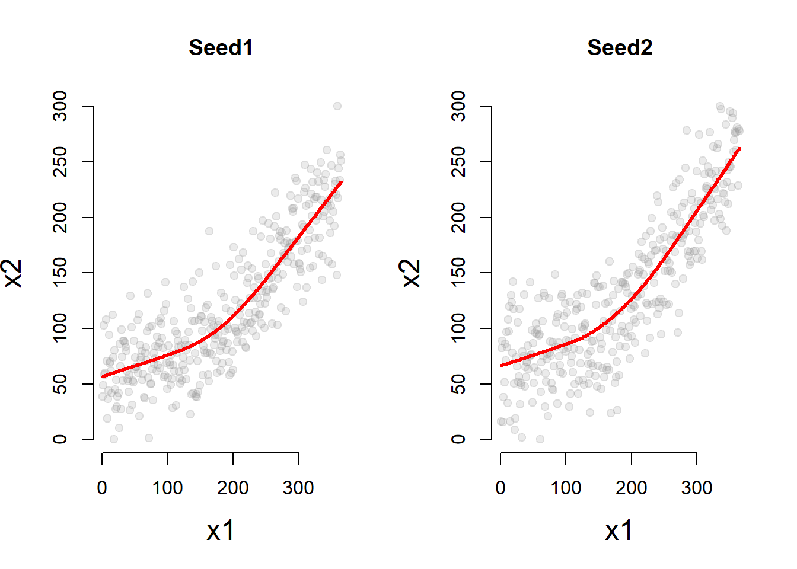

build_ts <- function( seed=123 )
{
set.seed( seed )
T = rep(1:365)
D = ifelse(T > 200, 1, 0)
P = ifelse(T <= 200, 0, rep(1:200))
err = rnorm(365, 150, 70)
Y = 5.4 + 0.5*T + 20*D + 1.2*P + err
Y <- rescale( Y, to = c(0, 300)) %>% round(2)
dat <- as.data.frame(cbind(Y, T, D, P))
return(dat)
}
dat.ts <- build_ts( seed=04172019 ) # seed set as date of assignment build
# build_rd - regression discontinuity?
# build_iv - instrumental variablesThe dataset contains four variables:
| Column | Variable name | Description |
|---|---|---|
| \(\text{Y}\) | \(\text{Wellbeing}\) | Wellbeing index (from 0 to 300) |
| \(\text{T}\) | \(\text{Time}\) | Time (from 1 to 365) |
| \(\text{D}\) | \(\text{Treatment}\) | Observation post (=1) and pre (=0) intervention |
| \(\text{P}\) | \(\text{Time Since Treatment}\) | Time passed since the intervention |
| Y | T | D | P | |
|---|---|---|---|---|
| 1 | 95.43 | 1 | 0 | 0 |
| 2 | 87.76 | 2 | 0 | 0 |
| 3 | 30.46 | 3 | 0 | 0 |
| 4 | 15.78 | 4 | 0 | 0 |
| 5 | 114.14 | 5 | 0 | 0 |
| 6 | 4.34 | 6 | 0 | 0 |
| 7 | ||||
| 198 | 172.05 | 198 | 0 | 0 |
| 199 | 111.36 | 199 | 0 | 0 |
| 200 | 211.07 | 200 | 0 | 0 |
| 201 | 130.53 | 201 | 1 | 1 |
| 202 | 145.76 | 202 | 1 | 2 |
| 203 | 64.19 | 203 | 1 | 3 |
| 204 | 121.07 | 204 | 1 | 4 |
| 15 | ||||
| 360 | 265.31 | 360 | 1 | 160 |
| 361 | 260.68 | 361 | 1 | 161 |
| 362 | 267.22 | 362 | 1 | 162 |
| 363 | 232.51 | 363 | 1 | 163 |
| 364 | 296.84 | 364 | 1 | 164 |
| 365 | 275 | 365 | 1 | 165 |
Our model is based on the equation (??):
\[\begin{equation} \text{Y} = \text{b}_0 + \text{b}_1*Time + \text{b}_2*Treatment + \text{b}_3*Time Since Treatment + \text{e} \tag{.} \end{equation}\]
plot( dat.ts$T, dat.ts$Y, bty="n",
col=gray(0.5,0.5), cex=1.5, pch=19,
ylab="Well Being", xlab="Time (days)" )
We can run the model using the lm function in R.
regTS = lm ( Y ~ T + D + P, data=dat.ts ) # Our time series model
stargazer( regTS,
type = "html",
dep.var.labels = ("Wellbeing"),
column.labels = ("Model results"),
covariate.labels = c("Time", "Treatment", "Time Since Treatment"),
omit.stat = "all",
digits = 2 )| Dependent variable: | |
| Wellbeing | |
| Model results | |
| Time | 0.25*** |
| (0.04) | |
| Treatment | 1.03 |
| (6.39) | |
| Time Since Treatment | 0.57*** |
| (0.06) | |
| Constant | 62.75*** |
| (4.31) | |
| Note: | p<0.1; p<0.05; p<0.01 |
Let’s interpret our coefficients:
A useful exercise is to calculate outcomes at different points in time as we did in section ??. For instance, we can calculate the outcome right after the intervention, which occured at time = 200. Note that while \(\text{Time}\) = 201, \(\text{Time Since Treatment}\) is equal to 1 because it is the first day after the intervention.
\[\begin{equation} \text{Y} = \text{b}_0 + \text{b}_1*201 + \text{b}_2*1 + \text{b}_3*1 + \text{e} \tag{.} \end{equation}\]
We can also represent the point on a graph:
# We create a small dataset with the new values
data1 <- as.data.frame( cbind( T = 201, D = 1, P = 1 ))
# We use the function predict to (1) take the coefficients estimated in regTS and (2) calculate the outcome Y based on the values we set in the new datset
y1 <- predict( regTS, data1 )
# We plot our initial observations, the column Y in our dataset
plot( dat.ts$Y,
col = "gray",
xlim = c(1, 365),
ylim = c(0, 400),
xlab = "Time (days)",
ylab = "Wellbeing index")
# We add a point showing the level of wellbeing at time = 201)
points(201, y1, col = "dodgerblue4", pch = 19, bg = "dodgerblue4", cex = 2)
text(201, y1, labels = "t = 201", pos = 4, cex = 1)
# Line marking the interruption
abline( v=200, col="red", lty=2 )Figure .: Wellbeing level at t = 201
dat1 <- build_ts( seed=123 )
dat2 <- build_ts( seed=456 )
jplot( dat1$Y, dat2$Y, xlab="Y", ylab="Y" )
jplot( dat1$T, dat2$T, main="T Not Stochastic" ) # not stochastic
table( dat1$D, dat2$D ) # not stochastic##
## 0 1
## 0 200 0
## 1 0 165par( mfrow=c(1,2) )
jplot( dat1$T, dat1$Y, main="Seed1" )
jplot( dat2$T, dat2$Y, main="Seed2" )
reg1 = lm ( Y ~ T + D + P, data=dat1 )
reg2 = lm ( Y ~ T + D + P, data=dat2 )
stargazer( reg1, reg2,
type = "html",
dep.var.labels = ("Wellbeing Index"),
column.labels = c("Seed 1", "Seed 2"),
covariate.labels = c("Time", "Treatment", "Time Since Treatment"),
omit.stat = "all",
digits = 2 )| Dependent variable: | ||
| Wellbeing Index | ||
| Seed 1 | Seed 2 | |
| (1) | (2) | |
| Time | 0.19*** | 0.18*** |
| (0.04) | (0.04) | |
| Treatment | 13.09** | 16.41** |
| (6.12) | (6.77) | |
| Time Since Treatment | 0.54*** | 0.68*** |
| (0.06) | (0.07) | |
| Constant | 57.15*** | 66.69*** |
| (4.13) | (4.56) | |
| Note: | p<0.1; p<0.05; p<0.01 | |